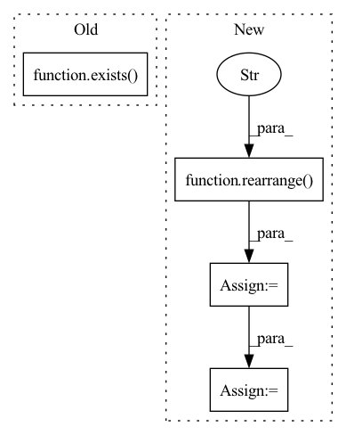

Pattern ID :2637
Before Change
def forward(self, *dimensions):
device = self.device
if not exists( self.rel_pos) or not self.cache_rel_pos:
positions = [torch.arange(d, device = device) for d in dimensions]
grid = torch.stack(torch.meshgrid(*positions, indexing = "ij"))
grid = rearrange(grid, "c ... -> (...) c")After Change
rel_positions = [torch.arange(-d + 1, d, device = device) for d in dimensions]
rel_pos_grid = torch.stack(torch.meshgrid(*rel_positions, indexing = "ij"), dim = -1)
rel_pos_grid = rearrange( rel_pos_grid, "... c -> (...) c" )
// mlp input
bias = rel_pos_grid.float()
for layer in self.net:
bias = layer(bias)In pattern: SUPERPATTERN
Frequency: 3
Non-data size: 4
Instances Fragment ID: 8624609
Project Name: lucidrains/make-a-video-pytorch
Commit Name: b6e0a17c5488b923d884272f7e46170352b0f0d5
Time: 2023-03-18
Author: lucidrains@gmail.com
File Name: make_a_video_pytorch/make_a_video.py
M Class Name: ContinuousPositionBias
N Class Name: ContinuousPositionBias
M Method Name: forward(1)
N Method Name: forward(1)
M Parent Class: nn.Module
N Parent Class: nn.Module
M File Name: make_a_video_pytorch/make_a_video.py
N File Name: make_a_video_pytorch/make_a_video.py
M Start Line: 110
M End Line: 126
N Start Line: 105
N End Line: 142
Before Change
x = F.pad(x, (0, 0, -causal_padding, causal_padding), value = 0.)
if exists( pos_emb) :
q_pos_emb, k_pos_emb = cast_tuple(pos_emb, num = 2)
// make sure queries positions are properly shiftedAfter Change
// reshape so we have chunk to chunk attention, without breaking causality
x = rearrange( x, "b (k n) d -> (b k) n d" , k = num_chunks)
context = rearrange(context, "b k r n d -> (b k) (r n) d")
// cross attention
out = self.cross_attn(x, context = context, pos_emb = pos_emb, **kwargs)
// reshape back to original sequence
out = rearrange(out, "(b k) n d -> b (k n) d", k = num_chunks)
// pad back to original, with 0s at the beginning (which will be added to the residual and be fine)
Fragment ID: 8624597
Project Name: lucidrains/retro-pytorch
Commit Name: 1ff2901fb9c7dd2ad49abd9dc643cb9fd7edac5e
Time: 2022-01-17
Author: lucidrains@gmail.com
File Name: retro_pytorch/retro_pytorch.py
M Class Name: ChunkedCrossAttention
N Class Name: ChunkedCrossAttention
M Method Name: forward(2)
N Method Name: forward(2)
M Parent Class: nn.Module
N Parent Class: nn.Module
M File Name: retro_pytorch/retro_pytorch.py
N File Name: retro_pytorch/retro_pytorch.py
M Start Line: 167
M End Line: 198
N Start Line: 167
N End Line: 192
Before Change
cond_prob_drop = 0.
):
batch_size, device = image_embed.shape[0], image_embed.device
t = self.time_mlp(time) if exists( self.time_mlp) else None
cond_prob_mask = prob_mask_like(batch_size, cond_prob_drop, device = device)
After Change
// mask out image embedding depending on condition dropout
// for classifier free guidance
image_embed = torch.where(
rearrange(cond_prob_mask, "b -> b 1"),
image_embed,
rearrange( self.null_image_embed, "d -> 1 d" )
)
cond = torch.cat((t, image_embed), dim = -1)
hiddens = []
Fragment ID: 8624585
Project Name: lucidrains/dalle2-pytorch
Commit Name: 25d980ebbf1e22ce8396cdec400e22e83f754176
Time: 2022-04-12
Author: lucidrains@gmail.com
File Name: dalle2_pytorch/dalle2_pytorch.py
M Class Name: Unet
N Class Name: Unet
M Method Name: forward(2)
N Method Name: forward(2)
M Parent Class: nn.Module
N Parent Class: nn.Module
M File Name: dalle2_pytorch/dalle2_pytorch.py
N File Name: dalle2_pytorch/dalle2_pytorch.py
M Start Line: 411
M End Line: 414
N Start Line: 412
N End Line: 425